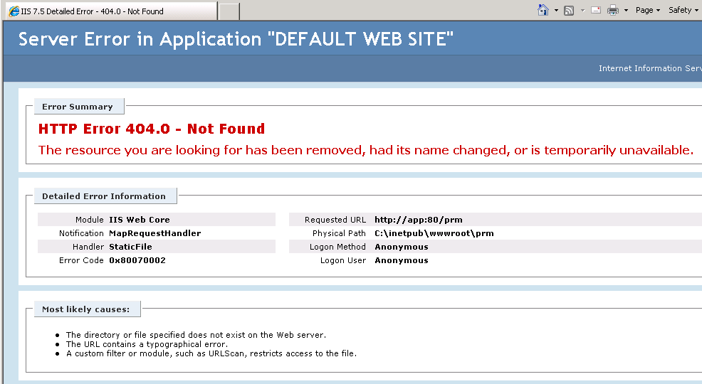
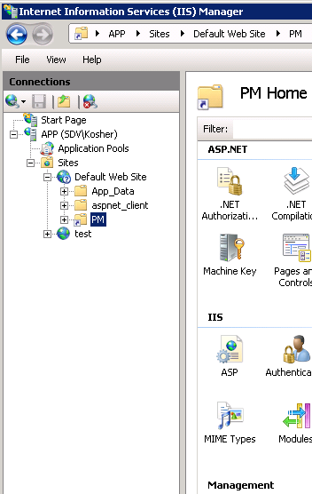
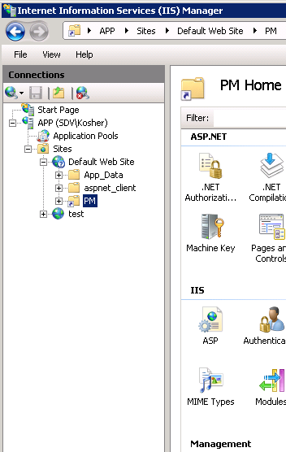

After installation of Password manager I cannot get to any portal and am receiving Error
404.0

Error 404.0 means that there is no requested resource available, in other words URL that you entered points to nowhere. It can happen because of different reasons, but the most common are:
First of all please make sure that the virtual directory you specified during Password Manager isntallation (by default called PM) exists in IIS.  If not, then please check that all requirements are fulfilled per KB2125, and reinstall Password Manager under a local administrator account. If the virtual directory is in place, then it might be some security issues. Please make sure that NTFS permission to Password manager installation directory allows IIS to view it.
Error 404.0 means that there is no requested resource available, in other words URL that you entered points to nowhere. It can happen because of different reasons, but the most common are:
- There is not virtual directory in IIS structure that corresponds to the entered URL
- Permissions issues within IIS.
First of all please make sure that the virtual directory you specified during Password Manager isntallation (by default called PM) exists in IIS.  If not, then please check that all requirements are fulfilled per KB2125, and reinstall Password Manager under a local administrator account. If the virtual directory is in place, then it might be some security issues. Please make sure that NTFS permission to Password manager installation directory allows IIS to view it.